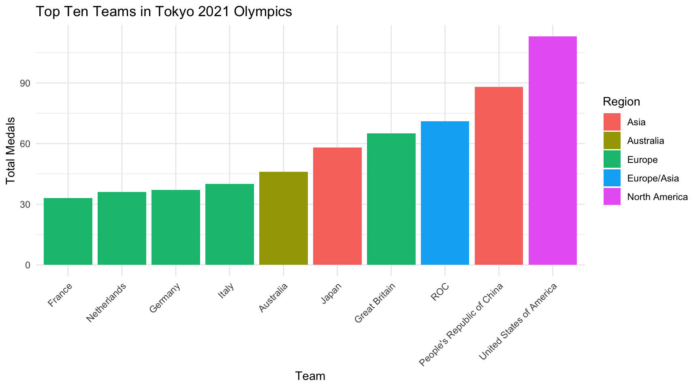

oj <- read_csv('https://avdanl.github.io/data/tokyo-2021-dataset-v3.csv')
nvars <- format(round(ncol(oj), 0),
nsmall=0,
big.mark=",")
nobs <- format(round(nrow(oj), 0),
nsmall=0,
big.mark=",")DANL Project
Data-Driven Mastery: Unlocking Business Potential
1 Introduction
About this project 👏
This is my project for Data Analytics 200. In it I will be using the tokyo-2021-datset-v3.csv to show past winners of olympic games. The data shows 86 different countries and sorts them by medals won, by Gold, Silver, Bronze and overall total.This project is important because it can be used to predict future outcomes of the olypic games. By using this data, we can see who has won the most medals and use that to determine who will win in the future.
2 Variable Description
- Rank: Where each country stands as opposed to other countries
- Team/NOC: Each country that has participated
- gold_medal: 1st place award for a country
- silver_medal: 2nd place award for a country
- bronze_medal: 3rd place award for a country
- total: How many awards for each participant/country
- continent: which continent each country belongs to
2.1 Summary Statistics
Rows: 93 Columns:9
#
url <- 'https://avdanl.github.io/data/tokyo-2021-dataset-v3.csv'
data <- read.csv(url)
#
print(data) Rank Team.NOC Gold.Medal Silver.Medal Bronze.Medal Total
1 1 United States of America 39 41 33 113
2 2 People's Republic of China 38 32 18 88
3 3 Japan 27 14 17 58
4 4 Great Britain 22 21 22 65
5 5 ROC 20 28 23 71
6 6 Australia 17 7 22 46
7 7 Netherlands 10 12 14 36
8 8 France 10 12 11 33
9 9 Germany 10 11 16 37
10 10 Italy 10 10 20 40
11 11 Canada 7 6 11 24
12 12 Brazil 7 6 8 21
13 13 New Zealand 7 6 7 20
14 14 Cuba 7 3 5 15
15 15 Hungary 6 7 7 20
16 16 Republic of Korea 6 4 10 20
17 17 Poland 4 5 5 14
18 18 Czech Republic 4 4 3 11
19 19 Kenya 4 4 2 10
20 20 Norway 4 2 2 8
21 21 Jamaica 4 1 4 9
22 22 Spain 3 8 6 17
23 23 Sweden 3 6 0 9
24 24 Switzerland 3 4 6 13
25 25 Denmark 3 4 4 11
26 26 Croatia 3 3 2 8
27 27 Islamic Republic of Iran 3 2 2 7
28 28 Serbia 3 1 5 9
29 29 Belgium 3 1 3 7
30 30 Bulgaria 3 1 2 6
31 31 Slovenia 3 1 1 5
32 32 Uzbekistan 3 0 2 5
33 33 Georgia 2 5 1 8
34 34 Chinese Taipei 2 4 6 12
35 35 Turkey 2 2 9 13
36 36 Greece 2 1 1 4
37 36 Uganda 2 1 1 4
38 38 Ecuador 2 1 0 3
39 39 Ireland 2 0 2 4
40 39 Israel 2 0 2 4
41 41 Qatar 2 0 1 3
42 42 Bahamas 2 0 0 2
43 42 Kosovo 2 0 0 2
44 44 Ukraine 1 6 12 19
45 45 Belarus 1 3 3 7
46 46 Romania 1 3 0 4
47 46 Venezuela 1 3 0 4
48 48 India 1 2 4 7
49 49 Hong Kong, China 1 2 3 6
50 50 Philippines 1 2 1 4
51 50 Slovakia 1 2 1 4
52 52 South Africa 1 2 0 3
53 53 Austria 1 1 5 7
54 54 Egypt 1 1 4 6
55 55 Indonesia 1 1 3 5
56 56 Ethiopia 1 1 2 4
57 56 Portugal 1 1 2 4
58 58 Tunisia 1 1 0 2
59 59 Estonia 1 0 1 2
60 59 Fiji 1 0 1 2
61 59 Latvia 1 0 1 2
62 59 Thailand 1 0 1 2
63 63 Bermuda 1 0 0 1
64 63 Morocco 1 0 0 1
65 63 Puerto Rico 1 0 0 1
66 66 Colombia 0 4 1 5
67 67 Azerbaijan 0 3 4 7
68 68 Dominican Republic 0 3 2 5
69 69 Armenia 0 2 2 4
70 70 Kyrgyzstan 0 2 1 3
71 71 Mongolia 0 1 3 4
72 72 Argentina 0 1 2 3
73 72 San Marino 0 1 2 3
74 74 Jordan 0 1 1 2
75 74 Malaysia 0 1 1 2
76 74 Nigeria 0 1 1 2
77 77 Bahrain 0 1 0 1
78 77 Saudi Arabia 0 1 0 1
79 77 Lithuania 0 1 0 1
80 77 North Macedonia 0 1 0 1
81 77 Namibia 0 1 0 1
82 77 Turkmenistan 0 1 0 1
83 83 Kazakhstan 0 0 8 8
84 84 Mexico 0 0 4 4
85 85 Finland 0 0 2 2
86 86 Botswana 0 0 1 1
87 86 Burkina Faso 0 0 1 1
88 86 Côte d'Ivoire 0 0 1 1
89 86 Ghana 0 0 1 1
90 86 Grenada 0 0 1 1
91 86 Kuwait 0 0 1 1
92 86 Republic of Moldova 0 0 1 1
93 86 Syrian Arab Republic 0 0 1 1
Rank.by.Total NOCCode Continent
1 1 USA North America
2 2 CHN Asia
3 5 JPN Asia
4 4 GBR Europe
5 3 ROC Europe/Asia
6 6 AUS Australia
7 9 NED Europe
8 10 FRA Europe
9 8 GER Europe
10 7 ITA Europe
11 11 CAN North America
12 12 BRA South America
13 13 NZL Australia
14 18 CUB North America
15 13 HUN Europe
16 13 KOR Asia
17 19 POL Europe
18 23 CZE Europe
19 25 KEN Africa
20 29 NOR Europe
21 26 JAM North America
22 17 ESP Europe
23 26 SWE Europe
24 20 SUI Europe
25 23 DEN Europe
26 29 CRO Europe
27 33 IRI Asia
28 26 SRB Europe
29 33 BEL Europe
30 39 BUL Europe
31 42 SLO Europe
32 42 UZB Asia
33 29 GEO Europe
34 22 TPE Asia
35 20 TUR Europe
36 47 GRE Europe
37 47 UGA Africa
38 60 ECU South America
39 47 IRL Europe
40 47 ISR Asia
41 60 QAT Asia
42 66 BAH North America
43 66 KOS Europe
44 16 UKR Europe
45 33 BLR Europe
46 47 ROU Europe
47 47 VEN South America
48 33 IND Asia
49 39 HKG Asia
50 47 PHI Asia
51 47 SVK Europe
52 60 RSA Africa
53 33 AUT Europe
54 39 EGY Africa
55 42 INA Asia
56 47 ETH Africa
57 47 POR Europe
58 66 TUN Africa
59 66 EST Europe
60 66 FIJ Australia
61 66 LAT Europe
62 66 THA Asia
63 77 BER North America
64 77 MAR Africa
65 77 PUR North America
66 42 COL South America
67 33 AZE Europe
68 42 DOM North America
69 47 ARM Europe
70 60 KGZ Asia
71 47 MGL Asia
72 60 ARG South America
73 60 SMR Europe
74 66 JOR Asia
75 66 MAS Asia
76 66 NGR Africa
77 77 BRN Asia
78 77 KSA Asia
79 77 LTU Europe
80 77 MKD Europe
81 77 NAM Africa
82 77 TKM Asia
83 29 KAZ Europe
84 47 MEX North America
85 66 FIN Europe
86 77 BOT Africa
87 77 BUR Africa
88 77 CIV Africa
89 77 GHA Africa
90 77 GRN North America
91 77 KUW Africa
92 77 MDA Asia
93 77 SYR Asia2.2 Top Ten Tokyo Olympics Teams
The Following bargraph shows the different teams in the 2021 Tokyo Olympics, and how many different medals they each have. The data could be used to show the odds of the next Olympic winner.
#
if (!requireNamespace("ggplot2", quietly = TRUE)) {
install.packages("ggplot2")
}
library(ggplot2)
#
medal_data <- data.frame(
Rank = c(1, 2, 3, 4, 5, 6, 7, 8, 9, 10),
Team = c("United States of America", "People's Republic of China", "Japan", "Great Britain", "ROC", "Australia", "Netherlands", "France", "Germany", "Italy"),
Gold = c(39, 38, 27, 22, 20, 17, 10, 10, 10, 10),
Silver = c(41, 32, 14, 21, 28, 7, 12, 12, 11, 10),
Bronze = c(33, 18, 17, 22, 23, 22, 14, 11, 16, 20),
Total_Medals = c(113, 88, 58, 65, 71, 46, 36, 33, 37, 40),
Team_Code = c("USA", "CHN", "JPN", "GBR", "ROC", "AUS", "NED", "FRA", "GER", "ITA"),
Region = c("North America", "Asia", "Asia", "Europe", "Europe/Asia", "Australia", "Europe", "Europe", "Europe", "Europe")
)
#
ggplot(medal_data, aes(x = reorder(Team, Total_Medals), y = Total_Medals, fill = Region)) +
geom_bar(stat = "identity") +
labs(title = "Top Ten Teams in Tokyo 2021 Olympics",
x = "Team",
y = "Total Medals",
fill = "Region") +
theme_minimal() +
theme(axis.text.x = element_text(angle = 45, hjust = 1))